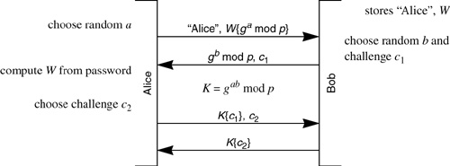

| 1. | Given that the Lamport hash (see §12.2 Lamport's Hash) value is sent in the clear over the network, why is it more secure than a password? |
| 2. | Is the Lamport hash protocol vulnerable to dictionary attack by an eavesdropper? Can someone impersonating the server do a dictionary attack? |
| 3. | In §12.2 Lamport's Hash we mentioned the notion of using only 64 bits of the hash. At each stage, 128 bits are computed, 64 bits are thrown away, and the hash of the retained 64 bits is used in the next stage. The purpose of only using 64 bits is so that a human does not need to type as long a string. Assuming the person will still only type 64 bits, does it work if hashn does a hash of all 128 bits of hashn-1, but what the person actually transmits is 64 bits of the result? |
| |
| 4. | Design a variant of Lamport's hash using k times more storage at the server but needing only 1/k as much processing, on average, at the client. |
| 5. | Suppose we are using Lamport's hash, and Bob crashes before receiving Alice's reply. Suppose an intruder, Trudy, can eavesdrop and detect that Bob crashed (maybe Trudy can even cause Bob to crash). Then Trudy has a quantity (whatever Alice replied that Bob did not receive) which Trudy can use to impersonate Alice, if Trudy logs in before Alice attempts to log into Bob again. How can we modify Bob's behavior to prevent this threat? (Exactly when do we overwrite Bob's database, and with what)? |
| 6. | With PDM, show how someone impersonating Alice or Bob can do a dictionary attack if they choose a Diffie-Hellman exponent, x, small enough that 2x < p. How could the other side prevent this? |
| 7. | Show protocols for doing augmented forms of EKE and SPEKE. |
| 8. | Show how Alice computes hash(2ab mod p, 2bW mod p) in Protocol 12-3. |
| 9. | Show how in Protocol 12-3 Alice can be assured that it is Bob, i.e., that the other side has the information stored at Bob. Explain why someone who has stolen Bob's database cannot impersonate Alice to Bob. |
| 10. | (*) Suppose in message 3 in Protocol 12-4, Alice signs only c. What vulnerability would this have? (Hint: someone who has captured Bob's database can do a man-in-the-middle attack.) |
| 11. | Explain how each of Alice and Bob compute K in the SRP protocol (Protocol 12-4). |
| 12. | (*) In Protocol 12-4, Bob's Diffie-Hellman value gb mod p is not encrypted with W. Argue why this is still secure. Note that it would not be secure for Bob to send gb mod p without encrypting it with W in Protocol 12-2. Why is that? How could you modify Protocol 12-2 so that it would be secure for Bob not to encrypt gb mod p with W? |
| 13. | Show credentials download protocols built upon SPEKE, PDM, and SRP. |
| 14. | Why is the EKE-based Protocol 12-7 insecure? (Hint: someone impersonating Bob can do a dictionary attack, but show how.) How can you make it secure while still having Bob transmit gb mod p unencrypted?

|